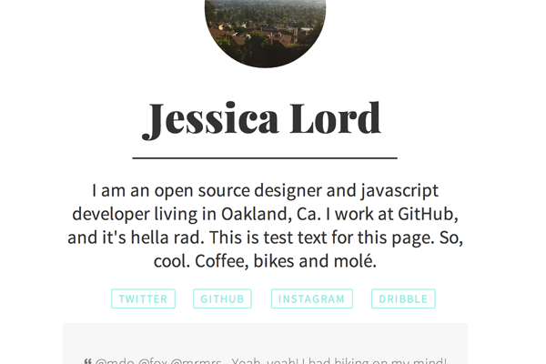
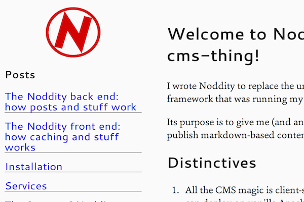

Examples
Click on the GitHub repository links for the full README.md.
Simple Personal Page

A simple personal page with a bio, two theme options or customize the HTML/CSS to your hearts content. — By @jllord.
GitHub RepositoryDemo
Poole, the Jekyll Butler

Makes getting going with Jekyll easy peasy with example templates, pages, posts, and styles. Hyde and Lanyon themes. — By @mdo.
GitHub RepositoryDemoTool Lending Library from a Spreadsheet

Manage tool (or anything, really) lending with a group using a Google spreadsheet and this site. — By @jllord.
GitHub RepositoryDemoFullscreen Map from Spreadsheet

Takes a link to a Google Spreadsheet with coordinates and maps them fullscreen with Sheetsee.js and Mapbox.js. — By @jllord.
GitHub RepositoryDemoInteractive locations from Spreadsheet

Connects to a Google Spreadsheet with coffee shop locations and details. An interactive map and table for searching the spots using Sheetsee.js. — By @jllord.
GitHub RepositoryDemoSite for Kickstarter Campaign

A simple Jekyll-based site to support a Kickstarter campaign. — By @muanchiou.
GitHub RepositoryDemoCalendar from Spreadsheet

Creates a monthly calendar from a spreadsheet with event dates and details. — By @jllord and @muanchiou.
GitHub RepositoryDemoArchived Pocket Articles with IFTTT & Sheets

Searchable and sortable list of your archived Pocket articles. Uses IFTTT.com to send archive to Google Spreadsheets and Sheetsee.js to build it on the site. — By @jllord.
GitHub RepositoryDemoPage Instagram & Tweets from IFTTT & Sheets
Use IFTTT.com to archive Instagram and Twitter on Google Spreadsheets and then send them to a simple personal site. — By @jllord.
GitHub RepositoryDemoNoddity: a markdown-based wiki/blog
It's like a blog backed by markdown files, but with a few features that make it work really well as a wiki. Click around the demo site, see how quickly pages come up! — By @TehShrike.
GitHub RepositoryDemoHave an example? Add it with a pull request. Want a badge/ribbon thing? Here are some spiffy colors.